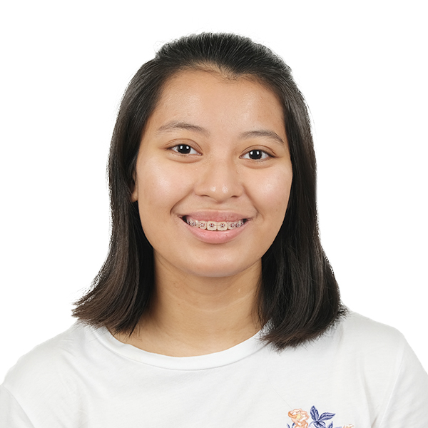

Christine Amidala M. Manlapaz

I am currently a sophomore studying at the University of the Philippines-Diliman under the BS Statistics program.
Contact Details
Facebook: Christine Manlapaz
Email: cmmanlapaz@up.edu.ph
Education
College: University of the Philippines-Diliman
II - BS Statistics
- University Scholar (1st Semester, AY 2021-2022)
- University Scholar (2nd Semester, AY 2021-2022)
Senior High School: St. Bridget School, Quezon City
Graduated on April 30, 2021
- With High Honors
- Excellent in Mathematics, Science, Filipino, Contemporary Arts from the Regions, Entrepreneurship, Personal Development, Physical Education, and Inquiry, Investigation, and Immersion
Organizations
UP Variates
- Membership Points Co-Head (February 2022 - June 2022)
- Members' Welfare Head (September 2022 - Present)
UP Data Science Society
- Membership Team (September 2022 - Present)
- Records Team (September 2022 - Present)
Skills
- Can code in R and Python (Beginner to Intermediate)